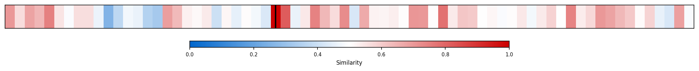

Description
This subcluster examines corporate market dynamics through two primary lenses: company valuations and industry concentration trends. Articles analyze equity pricing metrics like CAPE ratios, market returns forecasts, and the structural evolution of public corporations toward fewer, larger entities. The content draws heavily from financial research papers, market analysis reports, and institutional forecasts from sources like Goldman Sachs. Key themes include markup trends showing rising corporate pricing power, AI investment impacts on firm performance, venture capital returns analysis, and self-financing patterns in American corporations. Unlike broader productivity clusters, this subcluster specifically focuses on financial market implications and valuation methodologies rather than operational efficiency measures.
Similarity to All 70 Subclusters
Each cell represents a subcluster. Color intensity shows similarity (blue=low, red=high). Black line marks current subcluster position.
Relationship to Primary Clusters
Average similarity to each of the 15 primary clusters. Larger area = stronger relationship to that cluster.

Taxonomy Landscape
All 70 subclusters positioned by similarity (t-SNE). Current subcluster highlighted with label. Click to enlarge.

Network Connections
Current subcluster at center, connected to related subclusters. Line thickness = similarity strength.

Most Representative Articles
-
1. American public corporations have seen significant volatility in equity value since 1999, with a not
-
2. Last year the top 10 equities made up 27% of market capitalization but 69% of total economic profits
-
3. Since the release of ChatGPT in November of 2022, earnings per share of the MAG 7 have risen 125% (t
-
4. The largest 20 stocks in the S&P 500 have surged by $2tn in value since start of 2023, while the rem
-
5. .@TheEconomist notes that American firms collect 41% of "excess profits" globally as measured by fir
Edge Cases (Boundary Articles)
-
1. Evergrande, a Chinese property developer with $19B in overseas liabilities, has filed for bankruptcyThis article is borderline because while Evergrande's bankruptcy filing represents a significant corporate event that could impact market valuations and concentration in China's property sector, the article focuses primarily on the immediate legal/financial crisis rather than analyzing valuation metrics or market concentration trends that define the cluster. The content is more about a specific bankruptcy proceeding than the broader corporate market dynamics and analytical frameworks that characterize this subcluster.
-
2. Elon Musk says the Federal government's spending increase exceeded real GDP growth since 2019 by $80This article is borderline for the "Corporate Valuations & Market Concentration" cluster because it focuses on federal government spending patterns and fiscal policy rather than corporate market dynamics, valuations, or industry concentration trends. While government spending can indirectly affect corporate markets, the article's direct subject matter—breakdown of federal expenditures by category—doesn't align with the cluster's focus on equity pricing metrics and market concentration analysis.
-
3. China's "slow motion financial crisis" wasn't that slow, as highlighted by a recent Barclays report.This article is borderline because while it mentions corporate defaults (a valuation-related outcome), its primary focus is on credit defaults and financial distress in China's real estate sector rather than analyzing market concentration trends or equity valuation metrics. The content aligns more closely with banking/credit sector analysis, as evidenced by the higher similarity to the "Corporate Credit and Banking Sector Lending" cluster.
Original Dendrogram